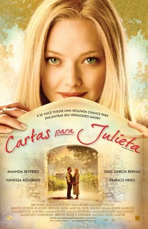
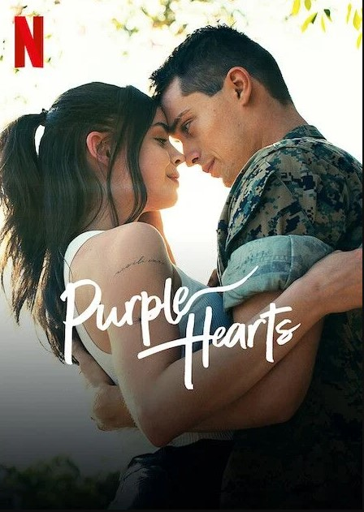

Assistir filmes é o meu hobby favorito, especialmente o gênero de Romance. Gosto de como essas histórias conseguem transmitir emoções profundas e nos fazem torcer pelos personagens.

Resumo: Uma jovem viaja para Verona e encontra uma carta de amor antiga, decidindo ajudar a autora a reencontrar seu amor do passado, enquanto ela mesma descobre um novo sentimento.

Resumo: Uma aspirante a cantora e um fuzileiro naval decidem se casar por conveniência militar, mas uma tragédia faz com que a linha entre o fingimento e a realidade comece a sumir.
Resumo: Raquel tem uma obsessão pelo seu vizinho misterioso, Ares. O que começa como uma observação silenciosa vira uma paixão intensa quando ele começa a retribuir os sentimentos.
Resumo: Louisa Clark é contratada para cuidar de Will Traynor, um homem rico que ficou tetraplégico. O otimismo dela acaba mudando a forma como ambos veem a vida e o amor.
Para relaxar ou estudar, ouço esta faixa: